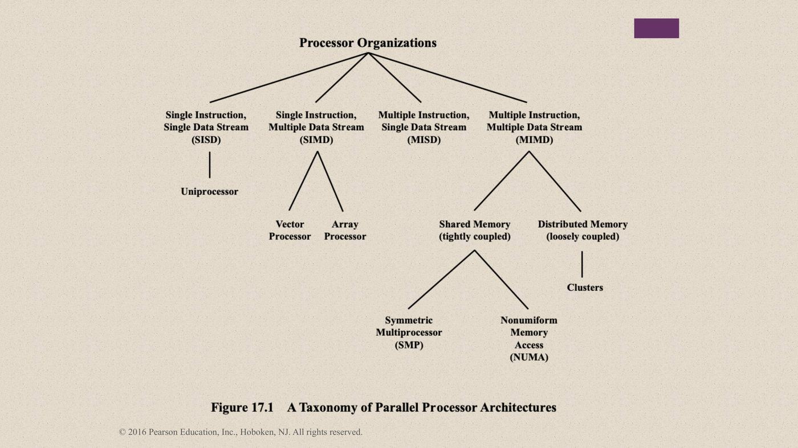
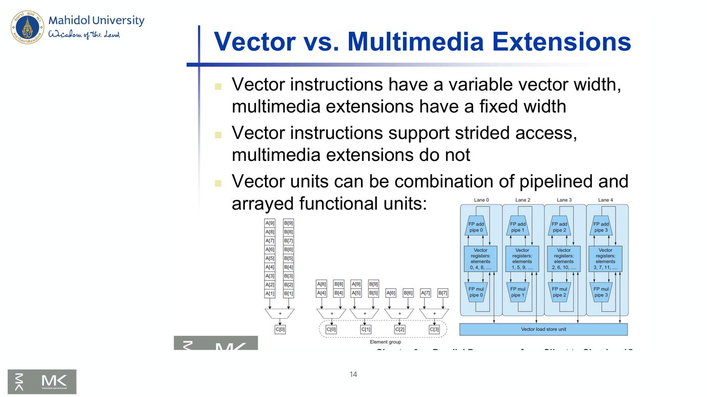
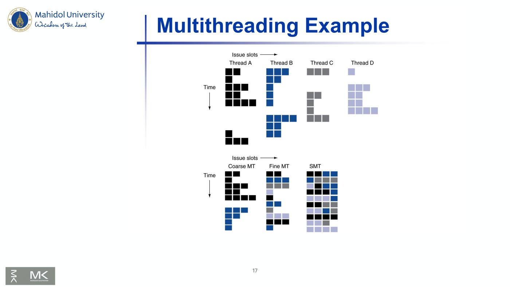
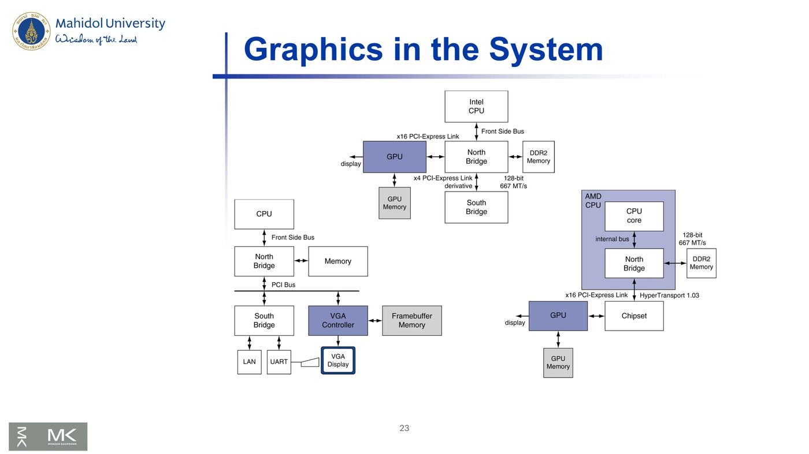
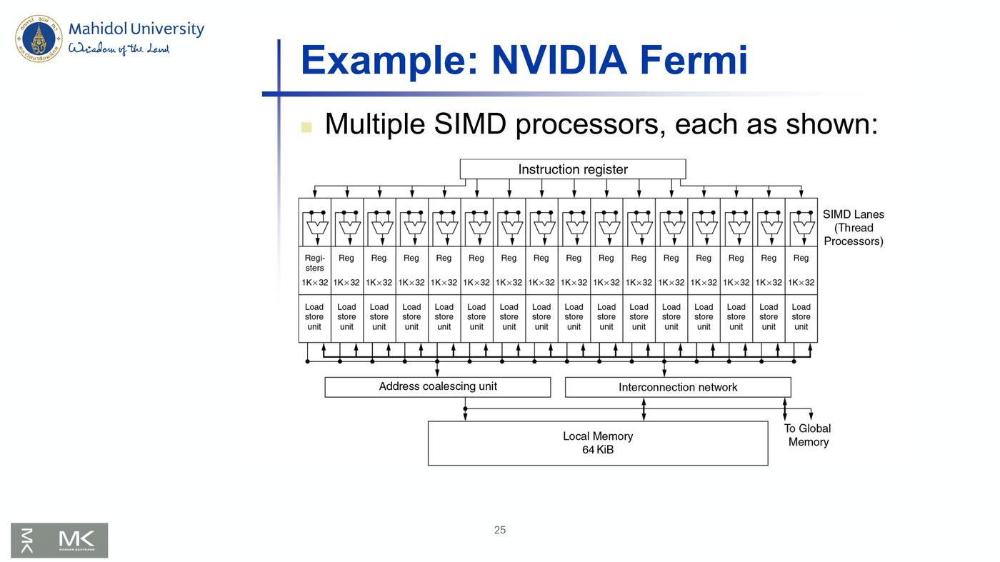
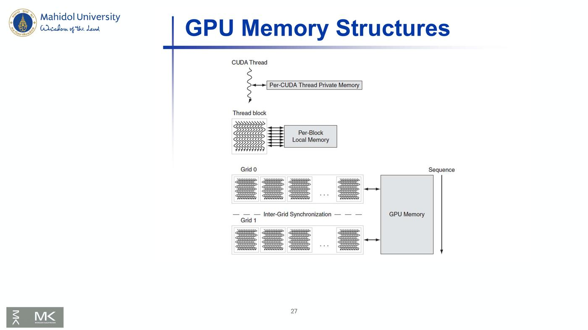
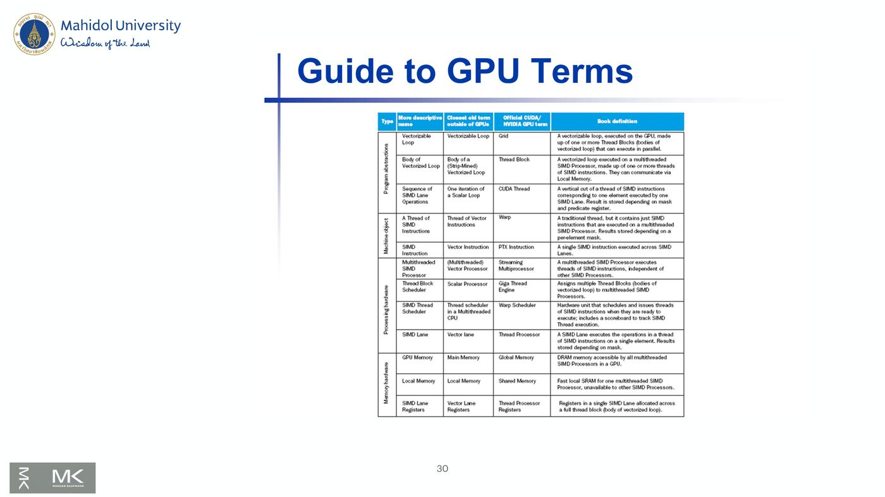
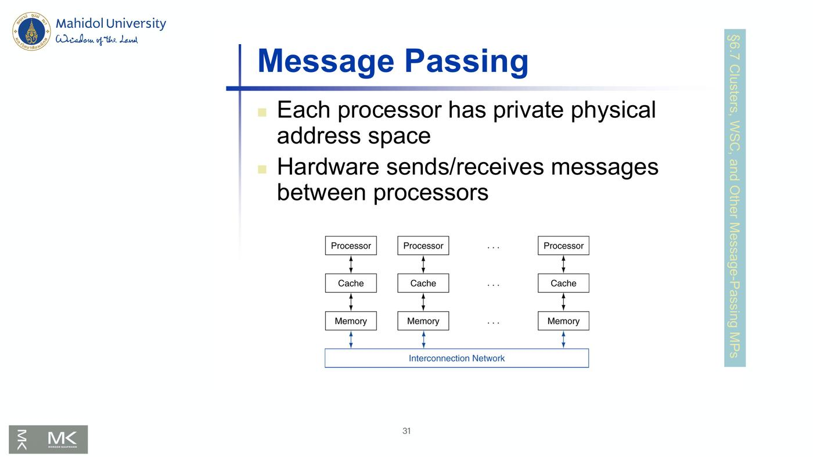
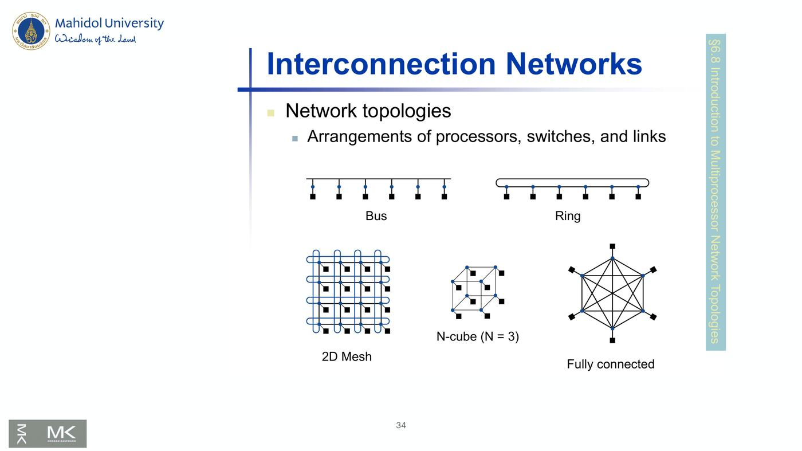
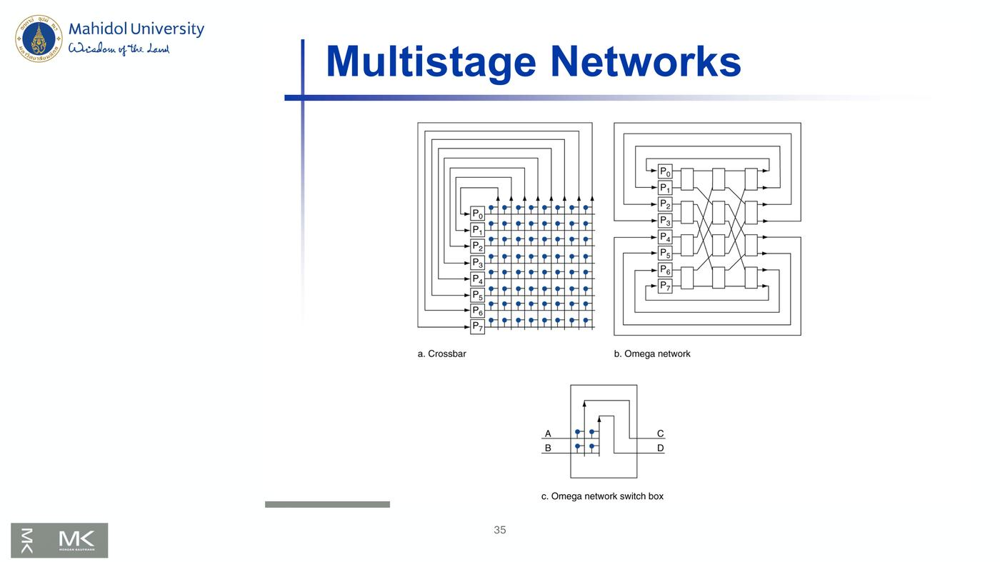

ภาพรวมบทนี้ การทำให้ CPU ตัวเดียวเร็วขึ้นเรื่อย ๆ ทำได้ยากแล้ว (ติดเรื่องพลังงานและความร้อน) ทางออกคือ ใช้ processor หลายตัวช่วยกันทำงาน
บทนี้ครอบคลุม:
- ทำไมเขียนโปรแกรมขนานถึงยาก
- การจัดกลุ่มเครื่องตาม Flynn (SISD, SIMD, MISD, MIMD) และ SPMD
- vector processor
- hardware multithreading
- shared memory (SMP, UMA/NUMA)
- GPU
- message passing, clusters, grid
- network topologies
- benchmark และ performance model
บทนี้ต่อจาก Chapter 01 (parallelism, SIMD), Chapter 04 (cache coherence) และ Chapter 07 (pipelining = parallelism ระดับคำสั่ง)
1. Course Outline และ Taxonomy
- บทนี้คือหัวข้อสุดท้ายของวิชา: the multiprocessor architecture
Figure 17.1 — A Taxonomy of Parallel Processor Architectures ⭐

Processor Organizations แบ่งเป็น 4 กลุ่มตาม Flynn:
| กลุ่ม | ชื่อเต็ม | แยกย่อยเป็น |
|---|---|---|
| SISD | Single Instruction, Single Data Stream | Uniprocessor |
| SIMD | Single Instruction, Multiple Data Stream | Vector Processor, Array Processor |
| MISD | Multiple Instruction, Single Data Stream | – |
| MIMD | Multiple Instruction, Multiple Data Stream | Shared Memory (tightly coupled) และ Distributed Memory (loosely coupled) |
- ใต้ Shared Memory:
- Symmetric Multiprocessor (SMP)
- Nonuniform Memory Access (NUMA)
- ใต้ Distributed Memory:
- Clusters
2. Chapter Overview
- Introduction
- Difficulty of creating parallel processing programs
- SISD, MIMD, SIMD, SPMD, Vector
- Hardware multithreading
- Multicore and other shared memory multiprocessors
- Introduction to GPUs
- Clusters & Message Passing
- Introduction to multiprocessors network topologies
3. Introduction
- เป้าหมาย: ต่อคอมพิวเตอร์หลายเครื่องเข้าด้วยกันเพื่อให้ได้ประสิทธิภาพสูงขึ้น
- Multiprocessors
- ได้ scalability, availability, power efficiency
| คำ | ความหมาย |
|---|---|
| Task-level (process-level) parallelism | throughput สูงสำหรับงานที่ไม่ขึ้นต่อกัน (หลายงานแยกกันรัน) |
| Parallel processing program | โปรแกรมเดียวที่รันบนหลาย processor |
| Multicore microprocessors | ชิปที่มีหลาย processor (core) อยู่ในตัว |
💡 Task-level = ร้านอาหารมีพ่อครัวหลายคน แต่ละคนทำคนละเมนู Parallel processing program = พ่อครัวหลายคนช่วยกันทำเมนูเดียว (ยากกว่าเพราะต้องประสานกัน)
4. Hardware and Software
| แบบ | ตัวอย่าง | |
|---|---|---|
| Hardware | Serial | Pentium 4 |
| Parallel | quad-core Xeon e5345 | |
| Software | Sequential | matrix multiplication |
| Concurrent | operating system |
- software แบบ sequential หรือ concurrent รันบน hardware แบบ serial หรือ parallel ก็ได้
- ความท้าทาย: ใช้ parallel hardware ให้คุ้ม
⚠️ Concurrent ≠ Parallel
- concurrent คือ software ที่มีหลายงานดำเนินไปพร้อมกัน (เช่น OS) ซึ่งรันบน CPU ตัวเดียวได้
- parallel หมายถึง hardware ที่ทำงานพร้อมกันได้จริง
5. What We've Already Covered
หัวข้อ parallelism ที่ตำราพูดถึงในบทก่อน ๆ แล้ว:
| หัวข้อตำรา | เรื่อง |
|---|---|
| §2.11 Parallelism and Instructions | Synchronization |
| §3.6 Parallelism and Computer Arithmetic | Subword Parallelism |
| §4.10 Parallelism and Advanced Instruction-Level Parallelism | (pipelining ขั้นสูง) |
| §5.10 Parallelism and Memory Hierarchies | Cache Coherence |
6. Parallel Programming ⭐
- ปัญหาอยู่ที่ parallel software
- ต้องได้ประสิทธิภาพเพิ่มขึ้นอย่างมีนัยสำคัญ
- ไม่อย่างนั้นใช้ uniprocessor ที่เร็วกว่าเลยดีกว่า เพราะง่ายกว่า!
- ความยาก 3 ข้อ:
| ความยาก | ความหมาย (อธิบายเสริม) |
|---|---|
| Partitioning | แบ่งงาน ให้แต่ละ processor ทำได้เท่า ๆ กัน |
| Coordination | จัดลำดับและประสานงาน ระหว่าง processor |
| Communications overhead | เวลาที่เสียไปกับการสื่อสาร ระหว่าง processor |
💡 ทาสีบ้านคนเดียวใช้ 8 ชั่วโมง ถ้าจ้าง 8 คนก็ไม่ได้เสร็จใน 1 ชั่วโมงเสมอไป เพราะต้อง แบ่งห้อง (partitioning), คุยว่าใครทำอะไร (coordination) และ เดินไปถามกัน (communication)
7. Instruction and Data Streams ⭐⭐
An alternate classification (Flynn's taxonomy)
| Data Streams: Single | Data Streams: Multiple | |
|---|---|---|
| Instruction Streams: Single | SISD: Intel Pentium 4 | SIMD: SSE instructions of x86 |
| Instruction Streams: Multiple | MISD: No examples today | MIMD: Intel Xeon e5345 |
- SPMD: Single Program Multiple Data
- โปรแกรมขนานที่รันบนเครื่อง MIMD
- ใช้ conditional code สำหรับ processor แต่ละตัว (เช่น
if (Pn == 0) ...)
💡 SPMD ไม่ใช่ประเภท hardware แต่เป็น วิธีเขียนโปรแกรม คือเขียนโปรแกรมเดียว ให้ทุก processor รัน แต่แต่ละตัวทำงานกับข้อมูลคนละส่วน
8. Vector Processors และ DAXPY
8.1 Vector Processors
- function units แบบ pipeline สูง
- ส่งข้อมูลเป็นสายระหว่าง vector registers กับ units
- ดึงข้อมูลจาก memory เข้า register
- เก็บผลจาก register กลับ memory
- ตัวอย่าง: Vector extension ของ RISC-V
- v0 ถึง v31: register 32 ตัว × 64 elements (element ละ 64 บิต)
- Vector instructions:
fld.v,fsd.v: load/store vectorfadd.d.v: บวก vector ของ doublefadd.d.vs: บวก scalar เข้ากับทุก element ของ vector ของ double
- ลด bandwidth ที่ใช้ fetch คำสั่งได้มาก (คำสั่งเดียวทำงานกับข้อมูลหลายตัว)
8.2 Example: DAXPY (Y = a × X + Y) ⭐
DAXPY คือ คำสั่งทางพีชคณิตเชิงเส้น (linear algebra) ใน library BLAS
- ชื่อมาจาก Double-precision A*X Plus Y
- ทำหน้าที่ นำ vector X คูณ scalar a แล้วบวกกับ vector Y
void daxpy(size_t n, double a, const double x[], double y[]) {
for (size_t i = 0; i < n; i++) {
y[i] = a * x[i] + y[i]; // Y = a*X + Y
}
}
Conventional RISC-V code
fld f0, a(x3) // load scalar a
addi x5, x19, 512 // end of array X
loop: fld f1, 0(x19) // load x[i]
fmul.d f1, f1, f0 // a * x[i]
fld f2, 0(x20) // load y[i]
fadd.d f2, f2, f1 // a * x[i] + y[i]
fsd f2, 0(x20) // store y[i]
addi x19, x19, 8 // increment index to x
addi x20, x20, 8 // increment index to y
bltu x19, x5, loop // repeat if not done
Vector RISC-V code
fld f0, a(x3) // load scalar a
fld.v v0, 0(x19) // load vector x
fmul.d.vs v0, v0, f0 // vector-scalar multiply
fld.v v1, 0(x20) // load vector y
fadd.d.v v1, v1, v0 // vector-vector add
fsd.v v1, 0(x20) // store vector y
| Conventional | Vector | |
|---|---|---|
| จำนวนคำสั่ง | 10 บรรทัด แต่ วนลูป (512/8 = 64 รอบ) | 6 คำสั่ง ไม่มีลูป |
| branch | มี bltu ทุกรอบ |
ไม่มี |
💡 array 512 bytes ÷ 8 bytes ต่อ double = 64 elements พอดีกับ vector register ที่มี 64 elements (คำนวณเสริม)
9. Vector vs Scalar, SIMD, Vector vs Multimedia Extensions
9.1 Vector vs. Scalar
Vector architectures และ compilers:
- ทำให้เขียนโปรแกรม data-parallel ง่ายขึ้น
- บอกชัดเจนว่าไม่มี loop-carried dependences (แต่ละรอบไม่ขึ้นกับรอบก่อน)
- hardware จึงตรวจสอบน้อยลง
- รูปแบบการเข้าถึงสม่ำเสมอ → ได้ประโยชน์จาก interleaved และ burst memory
- เลี่ยง control hazards เพราะไม่มีลูป
- ใช้ได้กว้างกว่า media extensions แบบเฉพาะกิจ (เช่น MMX, SSE)
- เข้ากับเทคโนโลยี compiler ได้ดีกว่า
9.2 SIMD ⭐
- ทำงานกับ vector ของข้อมูลทีละ element พร้อมกัน
- เช่น คำสั่ง MMX และ SSE ใน x86
- ข้อมูลหลายตัวอยู่ใน register กว้าง 128 บิต
- ทุก processor ทำคำสั่งเดียวกันในเวลาเดียวกัน
- แต่ละตัวใช้ data address ต่างกัน
- ข้อดี:
- synchronization ง่าย
- ใช้ hardware ควบคุมคำสั่งน้อยลง
- เหมาะที่สุดกับงานที่ data-parallel สูง
💡 เหมือนครูสั่งทั้งห้องว่า "บวก 5" พร้อมกัน แต่ละคนถือตัวเลขของตัวเอง
9.3 Vector vs. Multimedia Extensions

| Vector instructions | Multimedia extensions (MMX, SSE) | |
|---|---|---|
| ความกว้าง vector | ปรับได้ (variable) | คงที่ (fixed) |
| Strided access (เข้าถึงข้ามทีละหลายตัว) | รองรับ | ไม่รองรับ |
- vector units เป็นการผสม pipelined และ arrayed functional units ได้
- ในภาพมี 4 lanes แต่ละ lane มี FP add pipe และ FP mul pipe
- มี vector registers ของ element และ Vector load/store unit อยู่ด้านล่าง
10. Hardware Multithreading ⭐⭐
10.1 Multithreading
- ทำ thread หลาย thread พร้อมกัน
- ทำสำเนา registers, PC ฯลฯ ต่อ thread
- สลับระหว่าง thread ได้เร็ว
| แบบ | วิธีสลับ | ข้อดี / ข้อเสีย |
|---|---|---|
| Fine-grain multithreading | สลับ thread ทุก cycle — สลับการทำคำสั่งของแต่ละ thread | ถ้า thread หนึ่ง stall thread อื่นยังทำงานต่อได้ |
| Coarse-grain multithreading | สลับเฉพาะตอน stall นาน (เช่น L2-cache miss) | hardware ง่ายกว่า แต่ ซ่อน stall สั้น ๆ (เช่น data hazards) ไม่ได้ |
10.2 Simultaneous Multithreading (SMT)
- ใช้ใน multiple-issue dynamically scheduled processor
- จัดคิวคำสั่งจากหลาย thread
- คำสั่งจาก thread ที่เป็นอิสระต่อกัน ทำได้เมื่อ function unit ว่าง
- ภายใน thread เดียวกัน dependency จัดการด้วย scheduling และ register renaming
- ตัวอย่าง: Intel Pentium-4 HT (Hyper-Threading)
- 2 threads:
- registers ถูกทำสำเนา
- function units และ caches ใช้ร่วมกัน
- 2 threads:
10.3 Multithreading Example

- ภาพบน: thread A, B, C, D แต่ละ thread รันแยกกัน
- แกนนอน = issue slots (ช่องที่ทำคำสั่งพร้อมกันได้)
- แกนตั้ง = เวลา
- ช่องว่างในแต่ละ thread = stall
- ภาพล่าง: นำ thread A และ B มารวมกันบน processor เดียว
- Coarse MT: รัน A ยาว ๆ แล้วค่อยสลับไป B ตอน stall นาน
- Fine MT: สลับ A/B ทุก cycle แต่ละ cycle ทำได้ทีละ thread
- SMT: ใน cycle เดียวกัน ใช้ issue slots ร่วมกันทั้งสอง thread → เต็มช่องที่สุด ใช้เวลาน้อยที่สุด
10.4 Future of Multithreading
- จะอยู่รอดไหม? ในรูปแบบไหน?
- เรื่องพลังงานทำให้ microarchitecture ต้องเรียบง่ายขึ้น
- multithreading แบบที่ง่ายขึ้น
- ทนต่อ latency จาก cache miss
- การสลับ thread อาจได้ผลดีที่สุด
- core ง่าย ๆ หลายตัว อาจแชร์ทรัพยากรได้มีประสิทธิภาพกว่า
11. Shared Memory Multiprocessors
11.1 Shared Memory ⭐
- SMP: shared memory multiprocessor
- hardware ให้ physical address space เดียวสำหรับทุก processor
- ใช้ lock ในการ synchronize ตัวแปรที่แชร์กัน
- Memory access time:
| UMA (uniform) | NUMA (nonuniform) | |
|---|---|---|
| เวลาเข้าถึง memory | เท่ากัน ไม่ว่า processor ไหนจะเข้าถึง address ไหน | ไม่เท่ากัน — memory ใกล้ processor ตัวไหน ตัวนั้นเข้าถึงเร็วกว่า (อธิบายเสริม) |
11.2 Example: Sum Reduction ⭐
บวกเลข 64,000 ตัว บน UMA ที่มี 64 processor
- แต่ละ processor มี ID: 0 ≤ Pn ≤ 63
- แบ่งให้ processor ละ 1000 ตัว
- ขั้นแรก: แต่ละ processor รวมผลของตัวเอง
sum[Pn] = 0;
for (i = 1000*Pn; i < 1000*(Pn+1); i += 1)
sum[Pn] += A[i];
- จากนั้นต้องรวมผลย่อยเหล่านี้
- Reduction: divide and conquer
- processor ครึ่งหนึ่งบวกเป็นคู่ แล้วเหลือหนึ่งในสี่ …
- ต้อง synchronize ระหว่างแต่ละขั้นของ reduction
ขั้น reduction:
half = 64;
do
synch();
if (half%2 != 0 && Pn == 0)
sum[0] += sum[half-1];
/* Conditional sum needed when half is odd;
Processor0 gets missing element */
half = half/2; /* dividing line on who sums */
if (Pn < half) sum[Pn] += sum[Pn+half];
while (half > 1);
ไล่ตัวอย่าง (เสริม)
| รอบ | half หลังหาร 2 | ใครทำงาน |
|---|---|---|
| 1 | 32 | P0–P31 บวก sum ของ P32–P63 เข้าตัวเอง |
| 2 | 16 | P0–P15 บวก sum ของ P16–P31 |
| 3 | 8 | P0–P7 |
| 4 | 4 | P0–P3 |
| 5 | 2 | P0–P1 |
| 6 | 1 | P0 บวก sum[1] → sum[0] คือผลรวมทั้งหมด |
- ใช้ log₂64 = 6 ขั้น
- กรณี half เป็นเลขคี่: ตัวสุดท้ายไม่มีคู่ จึงให้ P0 รับไปบวกเอง
💡 นี่คือตัวอย่างของ SPMD — ทุก processor รันโค้ดเดียวกัน แต่ใช้
Pnตัดสินว่าตัวเองต้องทำอะไร
12. GPUs
12.1 History of GPUs
- Early video cards
- frame buffer memory พร้อมการสร้าง address สำหรับ video output
- 3D graphics processing
- เดิมอยู่ในคอมพิวเตอร์ระดับสูง (เช่น SGI)
- Moore's Law → ราคาถูกลง ความหนาแน่นสูงขึ้น
- มีการ์ด 3D graphics สำหรับ PC และเครื่องเล่นเกม
- Graphics Processing Units
- processor ที่เน้นงาน 3D graphics:
- vertex/pixel processing
- shading
- texture mapping
- rasterization
- processor ที่เน้นงาน 3D graphics:
12.2 Graphics in the System

ภาพแสดงวิวัฒนาการของตำแหน่ง graphics ในระบบ 3 แบบ:
| แบบ | โครงสร้าง |
|---|---|
| ยุคเก่า (ซ้ายล่าง) | CPU —Front Side Bus— North Bridge (+ Memory) —PCI Bus— VGA Controller + Framebuffer Memory → VGA Display; South Bridge ต่อ LAN, UART |
| Intel (กลางบน) | Intel CPU —Front Side Bus— North Bridge (+ DDR2 Memory 128-bit 667 MT/s) —x16 PCI-Express Link— GPU + GPU Memory → display; North Bridge —x4 PCI-Express derivative— South Bridge |
| AMD (ขวา) | North Bridge อยู่ในตัว AMD CPU (ต่อ CPU core ด้วย internal bus, ต่อ DDR2 Memory ตรง) —HyperTransport 1.03— Chipset —x16 PCI-Express Link— GPU + GPU Memory |
💡 จุดร่วมคือ GPU สมัยใหม่ มี memory ของตัวเอง และต่อผ่าน PCI-Express x16 ที่เร็วกว่า PCI bus เดิมมาก
12.3 GPU Architectures ⭐
- งานประมวลผลเป็นแบบ data-parallel สูง
- GPU เป็น highly multithreaded
- ใช้การสลับ thread ซ่อน latency ของ memory
- จึงพึ่ง multi-level caches น้อยกว่า
- graphics memory กว้างและมี bandwidth สูง
- แนวโน้มไปสู่ general purpose GPU (GPGPU)
- ระบบ CPU/GPU แบบ heterogeneous
- CPU รันโค้ดแบบ sequential, GPU รันโค้ดแบบ parallel
- Programming languages/APIs:
- DirectX, OpenGL
- C for Graphics (Cg), High Level Shader Language (HLSL)
- Compute Unified Device Architecture (CUDA)
12.4 Example: NVIDIA Fermi

- Multiple SIMD processors แต่ละตัวมีโครงสร้างตามภาพ:
- Instruction register ร่วมกัน
- SIMD Lanes (Thread Processors) 16 lanes แต่ละ lane มี Reg (1K × 32) และ Load store unit
- Address coalescing unit, Interconnection network
- Local Memory 64 KiB และต่อไป Global Memory
- SIMD Processor: 16 SIMD lanes
- SIMD instruction:
- ทำงานกับ thread กว้าง 32 elements
- ถูก schedule แบบ dynamic บน processor กว้าง 16 lanes ภายใน 2 cycles
- register 32K × 32-bit กระจายอยู่ใน lanes
- 64 registers ต่อ thread context
12.5 GPU Memory Structures

| ระดับ | memory ที่ใช้ |
|---|---|
| CUDA Thread | Per-CUDA Thread Private Memory |
| Thread block | Per-Block Local Memory |
| Grid 0, Grid 1, … (รันเป็น Sequence) | GPU Memory (ใช้ร่วมกัน) |
- ระหว่าง grid มี Inter-Grid Synchronization
12.6 Classifying GPUs ⭐
- GPU ไม่เข้ากับโมเดล SIMD/MIMD ได้พอดี
- conditional execution ใน thread ทำให้ดูเหมือน MIMD
- แต่ประสิทธิภาพลดลง
- ต้องเขียนโค้ดทั่วไปอย่างระมัดระวัง
- conditional execution ใน thread ทำให้ดูเหมือน MIMD
| Static: Discovered at Compile Time | Dynamic: Discovered at Runtime | |
|---|---|---|
| Instruction-Level Parallelism | VLIW | Superscalar |
| Data-Level Parallelism | SIMD or Vector | Tesla Multiprocessor (GPU) |
12.7 Putting GPUs into Perspective ⭐
| Feature | Multicore with SIMD | GPU |
|---|---|---|
| SIMD processors | 4 to 8 | 8 to 16 |
| SIMD lanes/processor | 2 to 4 | 8 to 16 |
| Multithreading hardware support for SIMD threads | 2 to 4 | 16 to 32 |
| Typical ratio of single precision to double-precision performance | 2:1 | 2:1 |
| Largest cache size | 8 MB | 0.75 MB |
| Size of memory address | 64-bit | 64-bit |
| Size of main memory | 8 GB to 256 GB | 4 GB to 6 GB |
| Memory protection at level of page | Yes | Yes |
| Demand paging | Yes | No |
| Integrated scalar processor/SIMD processor | Yes | No |
| Cache coherent | Yes | No |
💡 สรุปตาราง: GPU มี SIMD มากกว่า และ thread มากกว่า แต่มี cache เล็ก, memory น้อย, ไม่มี demand paging, ไม่มี scalar processor ในตัว และไม่ cache coherent
12.8 Guide to GPU Terms

- ตารางแบ่งคำศัพท์เป็น 4 กลุ่ม:
- Program abstractions
- Machine object
- Processing hardware
- Memory hardware
- แต่ละกลุ่มเทียบคำอธิบายทั่วไป, ชื่อที่ใช้นอก GPU, และชื่อทางการของ CUDA
- ตัวอย่างคู่คำที่สำคัญ (ตามตำรา):
| ชื่อทั่วไป | ชื่อใน CUDA |
|---|---|
| Vectorizable Loop | Grid |
| Body of Vectorized Loop | Thread Block |
| Sequence of SIMD Lane Operations | CUDA Thread |
| A Thread of SIMD Instructions | Instruction |
| SIMD Instruction | Thread |
| Multithreaded SIMD Processor | Streaming Multiprocessor |
| SIMD Lane | Thread Processor |
| GPU Memory | Global Memory |
| Local Memory | Shared Memory |
13. Message Passing, Clusters, Grid Computing
13.1 Message Passing ⭐

- แต่ละ processor มี physical address space ของตัวเอง
- hardware ส่งและรับ message ระหว่าง processor
- ในภาพ:
- แต่ละชุดมี Processor → Cache → Memory
- ทุกชุดต่อกันด้วย Interconnection Network
| Shared memory (SMP) | Message passing | |
|---|---|---|
| address space | เดียวกันทุก processor | ของใครของมัน |
| การสื่อสาร | อ่านเขียนตัวแปรร่วม + lock | ส่ง/รับ message |
13.2 Loosely Coupled Clusters
- เครือข่ายของคอมพิวเตอร์ที่เป็นอิสระต่อกัน
- แต่ละเครื่องมี memory และ OS ของตัวเอง
- เชื่อมกันด้วย I/O system เช่น Ethernet/switch, Internet
- เหมาะกับงานที่แยกเป็นงานอิสระได้:
- web servers, databases, simulations, …
- ข้อดี: high availability, scalable, affordable
- ปัญหา:
- ค่าบริหารจัดการสูง (จึงนิยมใช้ virtual machines)
- bandwidth ของการเชื่อมต่อต่ำ
- เทียบกับ bandwidth ระหว่าง processor กับ memory ใน SMP
13.3 Grid Computing
- คอมพิวเตอร์แยกกัน เชื่อมด้วยเครือข่ายระยะไกล
- เช่น การเชื่อมต่อ Internet
- แจกหน่วยงานออกไป แล้วส่งผลกลับมา
- ใช้เวลาว่างของ PC ได้
- เช่น SETI@home, World Community Grid
| Cluster | Grid | |
|---|---|---|
| การเชื่อมต่อ | Ethernet/switch ในที่เดียวกัน | long-haul network (Internet) |
| เครื่อง | เครื่องที่จัดไว้สำหรับงานนี้ | PC ทั่วไปที่ว่างอยู่ |
14. Interconnection Networks ⭐⭐
14.1 Network Topologies
การจัดวาง processor, switch และ link

| Topology | ลักษณะ (อธิบายเสริม) |
|---|---|
| Bus | ทุก node ต่อสายร่วมเส้นเดียว — ถูกแต่ แย่งกันใช้ |
| Ring | node ต่อเป็นวง แต่ละตัวมีเพื่อนบ้าน 2 ตัว |
| 2D Mesh | ตาราง 2 มิติ ต่อกับ node รอบข้าง |
| N-cube (N = 3) | ลูกบาศก์ 3 มิติ = 8 node แต่ละ node ต่อ 3 link |
| Fully connected | ทุก node ต่อตรงกับทุก node — เร็วที่สุด แพงที่สุด |
14.2 Multistage Networks

- a. Crossbar: switch แบบตาราง
- P ทุกตัวต่อถึงกันผ่านจุดตัด
- เชื่อมได้ครบทุกคู่ แต่ใช้ switch เยอะ (อธิบายเสริม)
- b. Omega network: ใช้ switch หลายชั้น (multistage)
- ใช้ switch น้อยกว่า crossbar
- แต่บางคู่เชื่อมพร้อมกันไม่ได้ (อธิบายเสริม)
- c. Omega network switch box: กล่อง switch 2 × 2
- input A, B → output C, D
- ต่อตรงหรือสลับไขว้ได้
14.3 Network Characteristics ⭐
- Performance
- Latency per message (บน network ที่ไม่มีโหลด)
- Throughput
- Link bandwidth
- Total network bandwidth
- Bisection bandwidth — bandwidth ที่ผ่าน เส้นแบ่ง network ออกเป็นสองซีกเท่ากัน ในกรณีแย่ที่สุด (นิยามเสริมจากตำรา)
- Congestion delays (ขึ้นกับปริมาณ traffic)
- Cost
- Power
- Routability in silicon (วางเส้นทางบนชิปได้ง่ายแค่ไหน)
15. Parallel Benchmarks และ Modeling Performance
15.1 Parallel Benchmarks
| Benchmark | ใช้วัดอะไร |
|---|---|
| Linpack | matrix linear algebra |
| SPECrate | รัน SPEC CPU programs แบบขนาน — job-level parallelism |
| SPLASH (Stanford Parallel Applications for Shared Memory) | ผสม kernels และ applications, strong scaling |
| NAS (NASA Advanced Supercomputing) suite | kernels ของ computational fluid dynamics |
| PARSEC (Princeton Application Repository for Shared Memory Computers) suite | multithreaded applications ที่ใช้ Pthreads และ OpenMP |
15.2 Code or Applications?
- Traditional benchmarks
- ใช้ code และ data sets ตายตัว
- แต่การเขียนโปรแกรมขนานยังพัฒนาอยู่
- algorithms, programming languages และ tools ควรเป็นส่วนหนึ่งของระบบที่วัดด้วยไหม?
- เปรียบเทียบระบบได้ ถ้าระบบเหล่านั้นทำ application ที่กำหนดได้
- เช่น Linpack, Berkeley Design Patterns
- จะส่งเสริมนวัตกรรมในแนวทางทำ parallelism
15.3 Modeling Performance
- สมมติว่าตัวชี้วัดที่สนใจคือ GFLOPs/sec ที่ทำได้
- วัดด้วย computational kernels จาก Berkeley Design Patterns
- Arithmetic intensity ของ kernel:
- FLOPs ต่อ byte ของ memory ที่เข้าถึง
- สำหรับคอมพิวเตอร์เครื่องหนึ่ง ต้องหา:
- Peak GFLOPS (จาก data sheet)
- Peak memory bytes/sec (ใช้ Stream benchmark)
💡 ข้อมูลสองค่านี้ใช้สร้าง Roofline model ในตำรา (เสริม)
- kernel ที่ arithmetic intensity ต่ำ ถูกจำกัดด้วย memory bandwidth
- kernel ที่ arithmetic intensity สูง ถูกจำกัดด้วย peak GFLOPS
16. Concluding Remarks ⭐
- เป้าหมาย: ประสิทธิภาพสูงขึ้นด้วยการใช้หลาย processor
- ความยาก:
- การพัฒนา parallel software
- การออกแบบสถาปัตยกรรมที่เหมาะสม
- SaaS มีความสำคัญมากขึ้น และ clusters เข้ากันได้ดีกับ SaaS
- performance per dollar และ performance per Joule เป็นตัวขับเคลื่อนทั้ง mobile และ WSC (warehouse-scale computers)
Q & A (สไลด์สุดท้าย)
17. คำศัพท์สำคัญ
| คำศัพท์ | ความหมาย | จำง่าย ๆ ว่า |
|---|---|---|
| Multiprocessor | ระบบที่มีหลาย processor | |
| Task-level parallelism | หลายงานอิสระรันพร้อมกัน | พ่อครัวคนละเมนู |
| Parallel processing program | โปรแกรมเดียวรันหลาย processor | พ่อครัวช่วยกันทำเมนูเดียว |
| Multicore | ชิปที่มีหลาย core | |
| Serial / Parallel hardware | Pentium 4 / Xeon e5345 | |
| Sequential / Concurrent software | matrix multiplication / OS | |
| Partitioning, Coordination, Communications overhead | 3 ความยากของ parallel programming | ทาสีบ้าน |
| SISD / SIMD / MISD / MIMD | Flynn's taxonomy | Pentium 4 / SSE / ไม่มี / Xeon |
| SPMD | Single Program Multiple Data บน MIMD | โค้ดเดียว เช็ก Pn |
| Vector processor | ทำงานกับ vector register | v0–v31 |
| DAXPY | Y = aX + Y (BLAS) | |
| Loop-carried dependence | รอบถัดไปขึ้นกับรอบก่อน | |
| MMX / SSE | multimedia extensions ของ x86 (ความกว้างคงที่) | |
| Strided access | เข้าถึงข้ามทีละหลายตำแหน่ง | |
| Fine-grain / Coarse-grain MT | สลับทุก cycle / สลับตอน stall นาน | |
| SMT | หลาย thread ใช้ issue slots ร่วมใน cycle เดียว | Pentium-4 HT |
| SMP | shared memory multiprocessor | address space เดียว |
| UMA / NUMA | เข้าถึง memory เวลาเท่ากัน / ไม่เท่ากัน | |
| Lock | ใช้ synchronize ตัวแปรร่วม | |
| Reduction | รวมผลแบบ divide and conquer | 64 → 32 → … → 1 |
| GPU / GPGPU | processor กราฟิก / ใช้ GPU ทำงานทั่วไป | |
| CUDA, DirectX, OpenGL, Cg, HLSL | APIs/ภาษาของ GPU | |
| SIMD lane | ช่องประมวลผลขนานใน GPU | Fermi 16 lanes |
| VLIW / Superscalar | instruction-level parallelism แบบ static / dynamic | |
| Message passing | address space แยก สื่อสารด้วย message | |
| Cluster | คอมพิวเตอร์อิสระต่อด้วย I/O network | |
| Grid computing | เครื่องห่างกัน ต่อผ่าน Internet ใช้เวลาว่าง | SETI@home |
| Bus / Ring / 2D Mesh / N-cube / Fully connected | network topologies | |
| Crossbar / Omega network | multistage networks | |
| Bisection bandwidth | bandwidth ข้ามเส้นแบ่งครึ่ง network | |
| Linpack, SPECrate, SPLASH, NAS, PARSEC | parallel benchmarks | |
| Arithmetic intensity | FLOPs ต่อ byte ที่เข้าถึง | |
| WSC / SaaS | Warehouse-scale computer / Software as a Service |
18. สรุปท้ายบท / จุดที่มักออกสอบ
เรื่องที่ต้องจำ
- Taxonomy:
- SISD → uniprocessor
- SIMD → vector/array processor
- MISD
- MIMD → shared memory (SMP, NUMA) / distributed memory (clusters)
- เป้าหมาย multiprocessor: scalability, availability, power efficiency
- task-level parallelism vs parallel processing program; multicore
- Hardware serial/parallel vs software sequential/concurrent (ผสมกันได้ทุกแบบ)
- ความท้าทายคือใช้ parallel hardware ให้คุ้ม
- ความยากของ parallel programming: partitioning, coordination, communications overhead
- ถ้าไม่เร็วขึ้นมาก ใช้ uniprocessor ที่เร็วกว่าเลยดีกว่า
- ตาราง Flynn พร้อมตัวอย่าง:
- SISD = Pentium 4
- SIMD = SSE
- MISD = ไม่มี
- MIMD = Xeon e5345
- SPMD = โปรแกรมขนานบน MIMD ที่ใช้ conditional code
- Vector RISC-V:
- v0–v31 (32 × 64 elements)
- fld.v / fsd.v / fadd.d.v / fadd.d.vs
- DAXPY แบบ vector ไม่มีลูป
- ข้อดีของ vector เช่น ไม่มี loop-carried dependence, เลี่ยง control hazard
- SIMD: register 128 บิต (MMX/SSE), synchronize ง่าย, เหมาะกับงาน data-parallel
- Vector vs multimedia extensions: ความกว้าง variable vs fixed; strided access รองรับ vs ไม่รองรับ
- Fine-grain vs coarse-grain MT; SMT (Pentium-4 HT: registers ทำสำเนา, function units และ caches ใช้ร่วม)
- SMP: address space เดียว + lock; UMA vs NUMA
- Sum reduction:
- 64,000 ตัว / 64 processor / processor ละ 1000
- reduction ครึ่งทีละรอบ ต้อง synch
- half เป็นเลขคี่ให้ P0 รับตัวที่เหลือ
- GPU:
- highly multithreaded, พึ่ง cache น้อย, memory กว้าง
- heterogeneous (CPU sequential / GPU parallel)
- APIs: DirectX, OpenGL, Cg, HLSL, CUDA
- NVIDIA Fermi: 16 SIMD lanes, thread กว้าง 32 elements, schedule ใน 2 cycles, 32K × 32-bit registers, 64 registers ต่อ thread context
- GPU ไม่เข้ากับ SIMD/MIMD พอดี และตาราง static/dynamic:
- VLIW / Superscalar
- SIMD-Vector / Tesla
- ตาราง Multicore with SIMD vs GPU: GPU ไม่มี demand paging, ไม่มี integrated scalar processor, ไม่ cache coherent
- Message passing: address space แยก
- Clusters:
- ข้อดี: high availability, scalable, affordable
- ปัญหา: ค่าบริหารจัดการ, interconnect bandwidth ต่ำ
- Grid: long-haul network, ใช้เวลาว่างของ PC (SETI@home)
- Topologies: bus, ring, 2D mesh, N-cube, fully connected; multistage: crossbar, omega
- Network characteristics:
- performance (latency, throughput: link / total / bisection bandwidth, congestion)
- cost, power, routability
- Benchmarks: Linpack, SPECrate, SPLASH, NAS, PARSEC
- Modeling: GFLOPs/sec, arithmetic intensity, peak GFLOPS, peak memory bytes/sec (Stream)
- Concluding: SaaS + clusters; performance per dollar / per Joule
คู่ที่มักสับสน
| คู่ | ต่างกันที่ |
|---|---|
| Task-level vs Parallel processing program | หลายงานอิสระ vs งานเดียวแบ่งหลาย processor |
| Concurrent vs Parallel | software หลายงาน vs hardware ทำพร้อมกันจริง |
| SIMD vs MIMD | คำสั่งเดียวหลายข้อมูล vs หลายคำสั่งหลายข้อมูล |
| SPMD vs SIMD | วิธีเขียนโปรแกรมบน MIMD vs ประเภท hardware |
| Vector vs Multimedia extension | ความกว้าง variable + strided vs fixed |
| Fine-grain vs Coarse-grain vs SMT | สลับทุก cycle vs สลับตอน stall นาน vs ใช้ slot ร่วมใน cycle เดียว |
| UMA vs NUMA | เวลาเข้าถึง memory เท่ากัน vs ไม่เท่ากัน |
| Shared memory vs Message passing | address space เดียว + lock vs แยก + ส่ง message |
| Cluster vs Grid | เครื่องเฉพาะในที่เดียวกัน vs PC ว่างผ่าน Internet |
| Link bandwidth vs Bisection bandwidth | ต่อ link vs ข้ามเส้นแบ่งครึ่ง network |